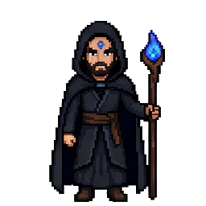
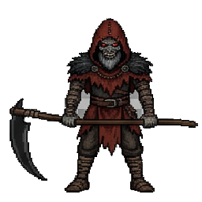
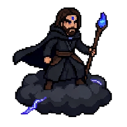
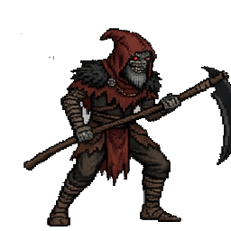
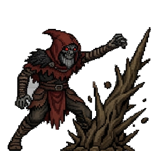

Archie starts with0 damage
Ready · mounted
The Tree of Woe · controlled storm perimeter
Opening sequence: breach the storm, stay on Nimbus, and wound the Scorncrow before initiative.




Action command
Swipe up or press Up Arrow / W.
Hard opening · seven action commands
Pilot Archie into the storm and answer each prompt before the timer closes. Misses damage Archie or destabilize Nimbus. If cloud stability reaches zero, Archie falls.
This encounter is intentionally demanding. The opening continues after individual misses, but repeated failures can throw Archie from Nimbus.
Opening simulation complete
Ready · mounted

Unwounded
GM handoff: Use these as the combatants' starting damage and conditions when initiative begins.